|
Tìm hiểu PHÁP HÀNH THIỀN TUỆ - Tỳ khưu HỘ PHÁP
PHẦN I BẮT ÐẦU VÀ CUỐI CÙNG CỦA PHÁP HÀNH THIỀN TUỆ I. 4 ÐỐI TƯỢNG PARAMATTHA VỚI PAÑÑATTI Ðối tượng paramattha liên quan với đối tượng paññatti diễn tiến theo một chiều, nghĩa là từ đối tượng paramattha chuyển sang đối tượng paññatti, chứ không có trường hợp ngược lại. Vì vậy, đối tượng paññatti hoàn toàn tùy thuộc vào đối tượng paramattha, còn đối tượng paramattha có khi liên quan đến đối tượng paññatti, có khi không liên quan đến đối tượng paññatti, nó chỉ hiện hữu một cách đơn thuần mà thôi. - Ðối tượng paramattha: là đối tượng chỉ trực tiếp Thực tánh pháp (sabhāva), không qua khái niệm hoặc danh từ ngôn ngữ nào. Thật ra, những khái niệm, ngôn ngữ hoàn toàn không nói lên được Thực tánh pháp. - Ðối tượng paññatti: là đối tượng đã qua khái niệm về ý nghĩa, hình dạng (attha), liên quan đến một đối tượng khác; và cũng đã qua danh từ ngôn ngữ chế định (nāma) gọi tên đối tượng ấy. Ðối tượng paññatti không chỉ trực tiếp Thực tánh pháp, song nhờ nó để hiểu biết phương pháp đạt đến Thực tánh pháp. Ðối tượng có 6 loại. 1- Rūpārammaṇa - Sắc đối tượng, sắc trần có 1 sắc pháp. 2- Saddārammaṇa - Thanh đối tượng, thanh trần có 1 sắc pháp. 3- Gandhārammaṇa - Hương đối tượng, hương trần có 1 sắc pháp. 4- Rasārammaṇa - Vị đối tượng, vị trần có 1 sắc pháp. 5- Phoṭṭhabbārammaṇa - Xúc đối tượng, xúc trần có 3 sắc pháp (đất, lửa, gió). 6- Dhammārammaṇa - Pháp đối tượng, pháp trần[24] có nhiều loại. Chủ thể: tâm biết 6 đối tượng có 6 loại: 1- Nhãn thức tâm có 2 tâm, chỉ biết sắc trần ở hiện tại, đối tượng thuộc về paramattha. 2- Nhĩ thức tâm có 2 tâm, chỉ biết thanh trần ở hiện tại, đối tượng thuộc về paramattha. 3- Tỷ thức tâm có 2 tâm, chỉ biết hương trần ở hiện tại, đối tượng thuộc về paramattha. 4- Thiệt thức tâm có 2 tâm, chỉ biết vị trần ở hiện tại, đối tượng thuộc về paramattha. 5- Thân thức tâm có 2 tâm, chỉ biết xúc trần ở hiện tại, đối tượng thuộc về paramattha. 6- Ý thức tâm có 79 hay 111 tâm, biết pháp trần ở 3 thời: quá khứ, hiện tại, vị lai và ngoại 3 thời [25] (kālavimutti), đối tượng thuộc về paramattha, đối tượng thuộc về paññatti. 6 thức tâm biết 6 đối tượng qua 6 môn diễn tiến qua 6 lộ trình tâm (vīthicitta) 1- Nhãn môn lộ trình tâm tiếp nhận sắc trần. 2- Nhĩ môn lộ trình tâm tiếp nhận thanh trần. 3- Tỷ môn lộ trình tâm tiếp nhận hương trần. 4- Thiệt môn lộ trình tâm tiếp nhận vị trần. 5- Thân môn lộ trình tâm tiếp nhận xúc trần. 6- Ý môn lộ trình tâm tiếp nhận pháp trần. * Vīthicitta - Lộ trình tâm, là những tâm phát sanh theo tuần tự, liên tục trong một lộ trình, cùng tiếp nhận một đối tượng, qua một môn tương ứng. Vì có 6 đối tượng tương quan với 6 môn, nên tâm cũng diễn tiến qua 6 lộ trình, gọi là lộ trình tâm. Trong lộ trình tâm, mỗi tâm phát sanh làm phận sự của mình xong rồi diệt, làm duyên cho tâm sau phát sanh làm phận sự của mình... Và cứ như vậy một cách tuần tự, liên tục không ngừng suốt từ lộ trình tâm này vừa chấm dứt, tiếp theo có một số hộ kiếp tâm (bhavaṅgacitta) sanh - diệt rồi chuyển sang lộ trình tâm khác, từ ngày... tháng... năm... đời này sang đời khác, kể từ vô thủy đến vô chung, đối với chúng sinh còn bị vô minh che án Thực tánh pháp, chưa chứng ngộ chân lý Tứ thánh đế, chưa chứng đắc Thánh Ðạo, Thánh Quả và Niết Bàn, vẫn còn tử sanh luân hồi, bởi do tham ái dắt dẫn tái sanh trong ba giới bốn loài. Ðối với bậc Thánh Arahán đã diệt đoạn tuyệt vô minh và tham ái, cho nên những lộ trình tâm chỉ có thể phát sanh đến lộ trình tâm cuối cùng gọi là "maraṇāsannavīthicitta": lộ trình cận tử tâm cuối cùng, không có đối tượng kamma: thiện nghiệp, ác nghiệp để cho quả tái sanh; hoặc không có kammanimitta: hình ảnh tạo nghiệp để cho quả tái sanh; hoặc không có gatinimitta: cảnh giới tái sanh kiếp sau. Vì vậy, bậc Thánh Arahán không còn tái sanh kiếp nào nữa. Bậc Thánh Arahán, khi những lộ trình cận tử tâm sanh rồi diệt tuần tự đến tử tâm (cuticitta) diệt (chết) cuối cùng của kiếp sống hiện tại, không có tái sanh tâm (paṭisandhicitta) phát sanh tiếp theo "tái sanh kiếp sau" như những chúng sinh khác, nên gọi là: Ngũ Uẩn Niết Bàn (khandhaparinibbāna), nghĩa là ngũ uẩn ấy tịch diệt, không còn ngũ uẩn nào khác tái sanh nữa; hay, Vô Dư Niết Bàn (anupādisesanibbāna), nghĩa là ngũ uẩn tịch diệt không còn dư sót. Ngoài bậc Thánh Arahán ra, còn lại tất cả chúng sinh: nhân loại, chư thiên, Phạm thiên... cho đến bậc Thánh Nhập Lưu, bậc Thánh Nhất Lai, bậc Thánh Bất Lai, vì chưa diệt đoạn tuyệt vô minh, tham ái, cho nên vẫn còn tái sanh tùy theo nghiệp cho quả tái sanh kiếp sau nữa. Ðối với tất cả chúng sinh còn vô minh và tham ái, sự chết chỉ là sự thay đổi sắc thân (sắc uẩn) gián đoạn trong mỗi kiếp; riêng tâm thức (4 danh uẩn: thọ uẩn, tưởng uẩn, hành uẩn, thức uẩn) vẫn cứ sanh rồi diệt liên tục không ngừng tùy theo tâm và đối tượng, từ kiếp này sang kiếp khác, từ vô thủy đến vô chung trong vòng tử sanh luân hồi, đồng thời tích lũy tất cả mọi thiện nghiệp, bất thiện nghiệp, kể cả tình thương yêu, sự oan trái, sự hiểu biết chuyên môn, môn sở trường, sở đoản của mình, v.v... đầy đủ không thiếu sót một điều nào. Tâm sanh rồi diệt vô cùng mau lẹ, không gì có thể so sánh được. Theo Chú giải giải thích: "Chỉ một lần búng đầu ngón tay, tâm sanh diệt liên tục một ngàn tỷ lần (1012). [26] -ooOoo- Phân Biệt Ðối Tượng Paramattha Với Ðối Tượng Paññatti Theo các Lộ Trình Tâm Lộ trình tâm có 2 loại chính:
1- Ngũ Môn Lộ Trình Tâm Ngũ môn lộ trình tâm là lộ trình tâm phát sanh liên tục ở ngũ môn, có 5 loại: - Nhãn môn lộ trình tâm tiếp nhận sắc trần ở nhãn
môn. Ngũ môn lộ trình tâm chỉ tiếp nhận 5 đối tượng sắc pháp đơn thuần thuộc paramattha ở hiện tại. Ví dụ: Nhãn môn lộ trình tâm (cakkhudvāravīthicitta) Trường hợp đối tượng sắc trần thật mạnh tiếp xúc với nhãn môn, thì nhãn môn lộ trình tâm tuần tự sanh diệt liên tục qua 17 sát na tâm, thời gian tuổi thọ của sắc trần như sau: Ðồ biểu nhãn môn lộ trình tâm 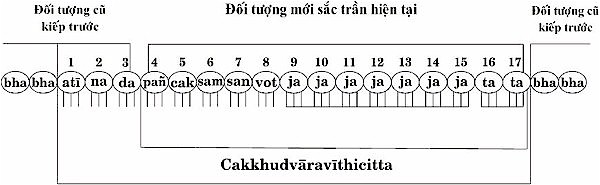 Giải Thích: * Bhavaṅgacitta: Hộ kiếp tâm. (Viết tắt: bha). Hộ kiếp tâm là tâm có phận sự gìn giữ kiếp của mỗi chúng sinh. Chúng sinh dầu lớn hoặc nhỏ, dầu trường thọ hoặc đoản thọ đều bắt đầu kiếp hiện tại bằng tái sanh tâm (paṭisandhicitta), có 1 trong 3 đối tượng: nghiệp (kamma), hoặc hình ảnh tạo nghiệp (kammanimitta), hoặc cảnh tái sanh (gatinimitta) là những đối tượng cũ từ cận tử lộ trình tâm kiếp trước. - Tái sanh tâm phát sanh chỉ 1 sát na tâm ở kiếp hiện tại rồi diệt, liền tiếp theo hộ kiếp tâm (bhavaṅgacitta) phát sanh. - Tái sanh tâm thuộc loại quả tâm nào, có đối tượng cũ kiếp trước loại nào; thì hộ kiếp tâm cùng thuộc loại quả tâm ấy, cùng có đối tượng cũ kiếp trước loại ấy. - Tái sanh tâm chỉ phát sanh 1 lần duy nhất đầu tiên của mỗi kiếp. - Hộ kiếp tâm có thể phát sanh liên tục nhiều lần trong giai đoạn giữa mỗi kiếp, sau mỗi lộ trình tâm chấm dứt và trường hợp khi ngủ mê không mộng mị. Hộ kiếp tâm có nhiều cơ hội phát sanh cho đến khi mãn kiếp, chấm dứt bằng tử tâm (cuticitta). - Tử tâm là tâm chỉ phát sanh 1 lần ở giai đoạn cuối cùng của mỗi kiếp. Tái sanh tâm và hộ kiếp tâm thuộc loại quả tâm nào, có đối tượng cũ kiếp trước loại nào, thì tử tâm cùng thuộc loại quả tâm ấy, cùng có đối tượng cũ kiếp trước ấy. Như vậy, trong mỗi kiếp hiện tại của mỗi chúng sinh, có 3 loại tâm: tái sanh tâm, hộ kiếp tâm và tử tâm cùng một loại quả tâm, cùng một đối tượng cũ từ kiếp trước, không phải đối tượng ở kiếp hiện tại. Khi chuyển đổi kiếp (chết), từ kiếp hiện tại sang kiếp vị lai, tử tâm ở kiếp hiện tại chắc chắn khác biệt với tái sanh tâm ở kiếp vị lai và dĩ nhiên đối tượng cũ quá khứ cũng khác biệt nhau. * Kiếp quá khứ: Tử tâm của kiếp quá khứ có đối tượng cũ (kamma, hoặc kammanimitta, hoặc gatinimitta), và loại quả tâm (kiếp quá khứ) hoàn toàn khác với tái sanh tâm của kiếp hiện tại. * Kiếp hiện tại: - Tái sanh tâm của kiếp hiện tại có đối tượng cũ (kamma, hoặc kammanimitta, hoặc gatinimitta), từ cận tử lộ trình tâm kiếp quá khứ. - Tái sanh tâm, hộ kiếp tâm, tử tâm cả 3 loại tâm này trong một kiếp hiện tại có cùng loại quả tâm và cùng đối tượng cũ (kamma, hoặc kammanimitta, hoặc gatinimitta), hoàn toàn giống nhau. * Kiếp vị lai: Tái sanh tâm của kiếp vị lai có đối tượng cũ (kamma, hoặc kammanimitta, hoặc gatinimitta), từ cận tử lộ trình tâm kiếp hiện tại, và có quả tâm (kiếp vị lai) hoàn toàn khác với tử tâm, hộ kiếp tâm, tái sanh tâm kiếp hiện tại. Ðồ biểu kiếp quá khứ - kiếp hiện tại - kiếp vị lai 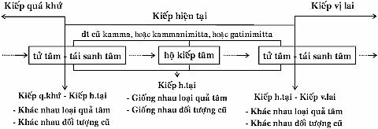 Ba loại tâm: tái sanh tâm, hộ kiếp tâm, tử tâm, này ở ngoài 6 lộ trình tâm (vīthimuttacitta) đồng thời cũng ở ngoài 6 môn (dvāravimutta). Mỗi khi có đối tượng sắc trần mới nào ở hiện tại quá mạnh tiếp xúc với nhãn môn, thì nhãn môn lộ trình tâm có đầy đủ 17 sát na tâm phát sanh làm phận sự của mình, theo sự diễn tiến tuần tự, liên tục tự nhiên như sau: 1- Atītabhavaṅgacitta: Hộ kiếp tâm quá khứ. (Viết tắt: atī). Ðối tượng mới sắc trần ở hiện tại đã xuất hiện, bhavaṅgacitta thứ nhất trải qua 1 sát na tâm sanh diệt, song vẫn còn giữ đối tượng cũ kiếp trước. 2- Bhavaṅgacalana: Hộ kiếp tâm rung động. (Viết tắt: na). Ðối tượng mới sắc trần ở hiện tại làm cho bhavaṅgacitta thứ nhì rung động, song vẫn còn giữ đối tượng cũ quá khứ. 3- Bhavaṅgupaccheda: Hộ kiếp tâm bị cắt đứt. (Viết tắt: da). Ðối tượng mới sắc trần kiếp hiện tại làm cho bhavaṅgacitta thứ ba bị cắt đứt dòng liên tục, đồng thời cắt đứt đối tượng cũ kiếp trước, làm duyên cho ngũ môn hướng tâm phát sanh. Cả 3 loại Bhavaṅgacitta này còn ở ngoài nhãn môn lộ trình tâm và ngoài 6 môn. 4- Pañcadvāravajjanacitta: Ngũ môn hướng tâm. (Viết tắt: pañ). Ngũ môn hướng tâm có khả năng làm phận sự tiếp nhận 5 đối tượng mới kiếp hiện tại: sắc trần, thanh trần, hương trần, vị trần, xúc trần. Trong nhãn môn lộ trình tâm này, ngũ môn hướng tâm tiếp nhận đối tượng mới sắc trần đầu tiên của lộ trình tâm rồi diệt, làm duyên cho nhãn thức tâm phát sanh. 5- Cakkhuviññāṇacitta: nhãn thức tâm (Viết tắt: cak). Nhãn thức tâm làm phận sự nhìn thấy sắc trần, thuộc sắc pháp paramattha rồi diệt, làm duyên cho tiếp nhận tâm phát sanh. 6- Sampaṭicchanacitta: tiếp nhận tâm (Viết tắt: sam). Tiếp nhận tâm làm phận sự tiếp nhận đối tượng sắc trần từ nhãn thức tâm rồi diệt, làm duyên cho suy xét tâm phát sanh. 7- Santīraṇacitta: suy xét tâm (Viết tắt: san). Suy sét tâm làm phận sự suy xét đối tượng tốt hoặc xấu rồi diệt, làm duyên cho xác định tâm phát sanh. 8- Voṭṭhabbana: xác định tâm (Viết tắt: vot). Xác định tâm đó là ý môn hướng tâm (manodvāravajjanacitta) làm phận sự xác định đối tượng của thiện tâm, hoặc bất thiện tâm, hoặc duy tác tâm tùy theo căn duyên rồi diệt, làm duyên cho tác hành tâm phát sanh. 9- 15 - Javanacitta: tác hành tâm (Viết tắt: ja). Tác hành tâm đó là thiện tâm, hoặc bất thiện, hoặc duy tác tâm phát sanh liên tục 7 sát na tâm cùng loại làm phận sự tạo nên thiện nghiệp, hoặc bất thiện nghiệp hoặc duy tác, tùy theo trình độ hiểu biết của chúng sinh. Riêng đối với bậc Thánh Arahán có duy tác tâm phát sanh chỉ tạo tác mà thôi, không thành thiện nghiệp, bất thiện nghiệp nào cả. 16- 17- Tadālambana: tiếp đối tượng tâm (Viết tắt: ta). Tiếp đối tượng tâm là quả tâm phát sanh liên tục 2 lần làm phận sự tiếp nhận đối tượng từ tác hành tâm, còn dư lại 2 sát na tâm, mãn tuổi thọ của đối tượng mới sắc trần hiện tại, chấm dứt nhãn môn lộ trình tâm bằng hộ kiếp tâm phát sanh có đối tượng cũ kiếp trước và những ý môn lộ trình tâm phát sanh tiếp theo. Nhĩ môn lộ trình tâm, tỷ môn lộ trình tâm, thiệt môn lộ trình tâm và thân môn lộ trình tâm, sự diễn tiến lộ trình tâm hầu hết giống nhãn môn lộ trình tâm, song chỉ có thức tâm và đối tượng khác nhau như sau: - Nếu ngũ môn hướng tâm tiếp nhận đối tượng mới thanh trần hiện tại, tiếp tục chuyển sang nhĩ thức tâm làm phận sự nghe thanh trần, trong nhĩ môn lộ trình tâm. - Nếu ngũ môn hướng tâm tiếp nhận đối tượng mới hương trần hiện tại, tiếp tục chuyển sang tỷ thức tâm làm phận sự ngửi hương trần, trong tỷ môn lộ trình tâm. - Nếu ngũ môn hướng tâm tiếp nhận đối tượng mới vị trần hiện tại, tiếp tục chuyển sang thiệt thức tâm làm phận sự nếm vị trần, trong thiệt môn lộ trình tâm. - Nếu ngũ môn hướng tâm tiếp nhận đối tượng mới xúc trần hiện tại, tiếp tục chuyển sang thân thức tâm làm phận sự tiếp xúc trần, trong thân môn lộ trình tâm. Ngũ môn lộ trình tâm chỉ có thể biết 5 đối tượng mới hiện tại sắc, thanh, hương, vị, xúc trần thuộc về sắc pháp paramattha mà thôi, hoàn toàn không biết đối tượng thuộc về paññatti nào. Cho nên: - Phận sự của nhãn thức tâm chỉ nhìn thấy hình dạng, màu sắc... thuộc sắc trần ấy mà thôi, không phân biệt, không có một khái niệm về ý nghĩa, danh từ ngôn ngữ của sắc trần ấy có ý nghĩa thế nào, danh từ gọi là gì. - Phận sự của nhĩ thức tâm chỉ nghe mọi âm thanh thuộc thanh trần ấy mà thôi; hoàn toàn không biết, không phân biệt, không có một khái niệm về ý nghĩa của âm thanh ấy thế nào. - Phận sự của tỷ thức tâm chỉ ngửi các thứ mùi thuộc hương trần ấy mà thôi; hoàn toàn không biết, không phân biệt, không có khái niệm về ý nghĩa, danh từ ngôn ngữ của hương trần ấy loại gì, danh từ gọi là gì. - Phận sự của thiệt thức tâm chỉ nếm các thứ vị thuộc vị trần ấy mà thôi; hoàn toàn không biết, không phân biệt, không có khái niệm về ý nghĩa, danh từ ngôn ngữ của vị trần ấy có ý nghĩa thế nào, danh từ gọi là gì. - Phận sự của thân thức tâm chỉ tiếp xúc cứng mềm, nóng lạnh, phồng - xẹp... thuộc xúc trần ấy mà thôi; hoàn toàn không biết, không phân biệt, không có khái niệm về ý nghĩa, danh từ ngôn ngữ của xúc trần ấy có ý nghĩa thế nào, danh từ gọi là gì. Bởi vì, nhãn thức tâm, nhĩ thức tâm, tỷ thức tâm, thiệt thức tâm, thân thức tâm chỉ biết đối tượng sắc pháp thuộc paramattha. Còn sự hiểu biết người này, người kia, vật này, vật kia v.v...; biết mùi này, mùi kia v.v...; biết vị này, vị kia v.v...; biết chất cứng của vật này, chất mềm của vật kia, sự phồng của vật này, sự xẹp của vật kia v.v... Ðó là sự biết của ý môn lộ trình tâm, hoàn toàn không phải của ngũ môn lộ trình tâm. 2- Ý Môn Lộ Trình Tâm (Manodvāravīthicitta) Ý môn lộ trình tâm là lộ trình tâm phát sanh liên tục ở ý môn. Có khả năng biết đối tượng paramattha và đối tượng paññatti. - Khi biết đối tượng thuộc paññatti, thì không biết đối tượng paramattha. - Khi có trí tuệ thiền tuệ, biết đối tượng paramattha, thì không biết đối tượng thuộc paññatti. Ý môn lộ trình tâm có 2 loại: 1- Kāmajavanamanodvāravīthicitta: Ý môn lộ trình tâm có dục giới tác hành tâm. 2- Appanājavanamanodvāravīthicitta: Ý môn lộ trình tâm có sắc giới, vô sắc giới, siêu tam giới tác hành tâm. Ở đây, chỉ nêu ra ý môn lộ trình tâm có dục giới tác hành tâm để phân biệt đối tượng paramattha và đối tượng paññatti mà thôi. Ý Môn Lộ Trình Tâm Có Dục Giới Tác Hành Tâm Ý môn lộ trình tâm có dục giới tác hành tâm có 2 loại: 1- Tadanuvattikamanodvāravīthicitta hay Anubandhaka- manodvāravīthicitta: Ý môn lộ trình tâm có dục giới tác hành tâm luôn luôn phát sanh theo sau ngũ môn lộ trình tâm, không thể đơn phương một mình phát sanh được. 2- Suddhamanodvāravīthicitta: Ý môn lộ trình tâm có dục giới tác hành tâm đơn thuần, không phát sanh theo sau ngũ môn lộ trình tâm. Giải thích: A- Ý môn lộ trình tâm có dục giới tác hành tâm theo sau ngũ môn lộ trình tâm như thế nào? Theo định luật tự nhiên, sau khi ngũ môn lộ trình tâm chấm dứt, liền tiếp theo sau ý môn lộ trình tâm có dục giới tác hành tâm tiếp tục phát sanh theo tuần tự 4 lộ trình tâm, làm phận sự biết đối tượng paramattha quá khứ từ ngũ môn lộ trình tâm; và biết đối tượng paññatti chế định từ đối tượng paramattha quá khứ ấy. 4 ý môn lộ trình tâm theo sau ngũ môn lộ trình tâm là: 1- Atītaggahaṇavīthicitta: Ý môn lộ trình tâm làm phận sự biết đối tượng quá khứ từ ngũ môn lộ trình tâm. Ý môn lộ trình tâm này phát sanh liền sau ngũ môn lộ trình tâm. 2- Samūhaggahaṇavīthicitta: Ý môn lộ trình tâm tổng kết tất cả các phần của đối tượng quá khứ, phát sanh liền sau ý môn lộ trình tâm Atītaggahaṇavīthicitta. Hai ý môn lộ trình tâm trên có đối tượng paramattha quá khứ. 3- Atthaggahaṇavīthicitta: Ý môn lộ trình tâm làm phận sự biết attthapaññatti: khái niệm về ý nghĩa, hình dạng v.v... chế định từ đối tượng của ý môn lộ trình tâm tổng kết. 4- Nāmaggahaṇavīthicitta: Ý môn lộ trình tâm làm phận sự biết Nāmapaññatti: danh từ ngôn ngữ chế định gọi tên khái niệm về ý nghĩa, hình dạng v.v... chế định từ đối tượng của Atthapaññatti: khái niệm về ý nghĩa, hình dạng. Hai ý môn lộ trình tâm này có đối tượng paññatti. Phân Biệt Ðối Tượng Paramattha Và Ðối Tượng Paññatti 1- Nhãn môn lộ trình tâm và ý môn lộ trình tâm Khi có đối tượng mới sắc trần rõ ràng tiếp xúc với nhãn môn, thì nhãn môn lộ trình tâm phát sanh theo tuần tự như sau: Ðồ biểu nhãn môn lộ trình tâm 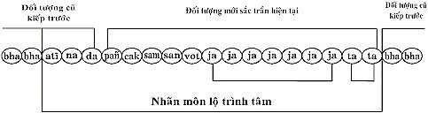 Sau khi nhãn môn lộ trình tâm chấm dứt, theo định luật tự nhiên, liền theo sau có 4 ý môn lộ trình tâm tiếp tục phát sanh theo tuần tự nhất định như sau: 1- Atītaggahaṇavīthicitta: Ý môn lộ trình tâm biết đối tượng mới sắc trần quá khứ từ nhãn môn lộ trình tâm, như sau: Ðồ biểu ý môn lộ trình tâm Atītaggahaṇavīthicitta 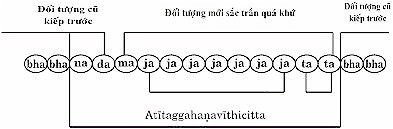 (Những ký âm viết tắt giống nhãn môn lộ trình tâm, chỉ còn Manodvāvajjanacitta: Ý môn hướng tâm viết tắt "ma"). Mỗi nhãn môn lộ trình tâm biết đối tượng mới sắc trần hiện tại, hình dạng, màu sắc... một điểm nào vừa chấm dứt, liền tiếp theo sau ý môn lộ trình tâm Atītaggahaṇavīthicitta tuần tự phát sanh biết đối tượng mới sắc trần quá khứ một điểm ấy. Như vậy, có bao nhiêu nhãn môn lộ trình tâm biết đối tượng mới sắc trần hiện tại; thì có bấy nhiêu ý môn lộ trình tâm Atītaggahaṇa- vīthicitta biết đối tượng mới sắc trần quá khứ. Sau khi ý môn lộ trình tâm Atītaggahaṇavīthicitta chấm dứt, liền tiếp theo sau ý môn lộ trình tâm Samūhaggahaṇavīthicitta. 2- Samūhaggahaṇavīthicitta: Ý môn lộ trình tâm tổng kết biết đối tượng mới sắc trần quá khứ của ý môn lộ trình tâm Atītaggahaṇa- vīthicitta như sau: Ðồ biểu ý môn lộ trình tâm Samūhaggahaṇavīthicitta 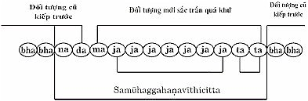 Mỗi ý môn lộ trình tâm Atītaggahaṇavīthicitta biết đối tượng mới sắc trần quá khứ chấm dứt, liền tiếp theo sau ý môn lộ trình tâm tổng kết Samūhaggahaṇavīthicitta phát sanh làm phận sự tổng kết các phần lại với nhau ở trong tâm. Như vậy, có bao nhiêu ý môn lộ trình tâm Atītaggahaṇavīthicitta thì có bấy nhiêu ý môn lộ trình tâm tổng kết Samūhaggahaṇavīthicitta. Hai ý môn lộ trình tâm này biết đối tượng mới sắc trần paramattha quá khứ từ nhãn môn lộ trình tâm. Sau khi ý môn lộ trình tâm tổng kết Samūhaggahaṇavīthicitta chấm dứt, liền tiếp theo sau ý môn lộ trình tâm Atthaggahaṇavīthicitta. 3- Atthaggahaṇavīthicitta: Ý môn lộ trình tâm biết đối tượng atthapaññatti: ý nghĩa, hình dạng chế định từ sắc trần tổng kết ấy như sau: Ðồ biểu ý môn lộ trình tâm Atthaggahaṇavīthicitta 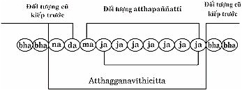 Ý môn lộ trình tâm tổng kết Samūhaggahaṇavīthicitta các phần lại với nhau ở trong tâm; liền tiếp theo sau ý môn lộ trình tâm biết đối tượng atthapaññatti: ý nghĩa, hình dạng... chế định từ đối tượng tổng kết các phần lại với nhau ấy, có khái niệm ý nghĩa, hình dạng nào đó, mà chưa có danh từ ngôn ngữ chế định gọi tên. Sau khi ý môn lộ trình tâm Atthaggahaṇavīthicitta biết atthapaññatti chấm dứt, liền tiếp theo sau ý môn lộ trình tâm Nāmaggahaṇavīthicitta. 4- Nāmaggahaṇavīthicitta: Ý môn lộ trình tâm biết đối tượng nāmapaññatti: danh từ ngôn ngữ chế định gọi tên Atthapaññatti: ý nghĩa hình dạng như sau: Ðồ biểu ý môn lộ trình tâm Nāmaggahaṇavīthicitta 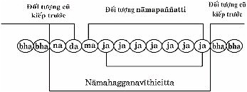 Ý môn lộ trình tâm Atthaggahaịavīthicitta biết đối tượng Atthapaññatti: ý nghĩa hình dạng chế định, có khái niệm ở trong tâm; liền tiếp theo sau ý môn lộ trình tâm biết đối tượng nāmapaññatti: danh từ ngôn ngữ chế định gọi tên atthapaññatti hình dạng ấy. Ví dụ: "con người" hoặc "chiếc xe" v.v... Hai ý môn lộ trình tâm này biết đối tượng paññatti. Tóm lại, nhãn môn lộ trình tâm và 4 ý môn lộ trình tâm theo sau phân biệt đối tượng paramattha và đối tượng paññatti như sau: - Nhãn môn lộ trình tâm biết đối tượng mới sắc trần hiện tại sắc pháp paramattha hiện tại. - Hai ý môn lộ trình tâm Atītaggahaṇavīthicitta và Samūhag- gahaṇavīthicitta biết đối tượng mới sắc trần quá khứ sắc pháp paramattha quá khứ. - Hai ý môn lộ trình tâm Atthaggahaṇavīthicitta và Nāmag- gahaṇavīthicitta biết đối tượng paññatti chế định. Sự hiểu biết theo phận sự - Ta không có, nên không có chủ thể nhìn thấy. - Mắt là nhãn tịnh sắc thuộc sắc pháp, chỉ có thể tiếp nhận đối tượng sắc trần mà thôi, không thể nhìn thấy được sắc trần. - Nhãn thức tâm có phận sự nhìn thấy sắc trần, hình dạng, màu sắc, sắc pháp paramattha hiện tại. - Nhãn môn lộ trình tâm biết đối tượng mới sắc trần hiện tại, sắc pháp paramattha hiện tại. - Hai ý môn lộ trình tâm Atītaggahaṇavīthicitta và Samūhag- gahaṇavīthicitta biết sắc trần quá khứ, sắc pháp paramattha quá khứ. - Hai ý môn lộ trình tâm Atthaggahaṇavīthicitta và Nāmag- gahaṇavīthicitta biết đối tượng paññatti chế định. Ví dụ: "Con người". Một đối tượng sắc trần rõ ràng hình dạng tiếp xúc với nhãn môn, sự diễn tiến qua các lộ trình tâm nhất định như sau: - Nhãn môn lộ trình tâm (cakkhudvāravīthicitta) biết đối tượng hình dạng, sắc pháp paramattha hiện tại; tiếp theo: - Ý môn lộ trình tâm Atītaggahaṇavīthicitta biết đối tượng hình dạng ấy, sắc pháp paramattha quá khứ; tiếp theo: - Ý môn lộ trình tâm Samūhaggahaṇavīthicitta tổng kết đối tượng các phần hình dạng ấy lại với nhau cũng là sắc pháp paramattha quá khứ; tiếp theo: - Ý môn lộ trình tâm Atthaggahaṇavīthicitta biết đối tượng atthapaññatti: đó là hình dạng tổng kết được chế định ấy qua khái niệm về "hình dạng một con người" quen thuộc, ở trong ý thức tâm; tiếp theo: - Ý môn lộ trình tâm Nāmaggahaṇavīthicitta biết đối tượng nāmapaññatti: danh từ ngôn ngữ chế định về hình dạng một con người quen thuộc ấy gọi tên là "Thanh". Nếu trường hợp khái niệm về hình dạng một con người quen thuộc ấy mà không nhớ tên gọi, thì ý môn lộ trình tâm Nāmaggahaṇa- vīthicitta không phát sanh. 2- Nhĩ môn lộ trình tâm và ý môn lộ trình tâm Khi có đối tượng thanh trần âm thanh hiện tại rõ ràng tiếp xúc với nhĩ môn thì nhĩ môn lộ trình tâm phát sanh theo tuần tự như sau: Ðồ biểu nhĩ môn lộ trình tâm 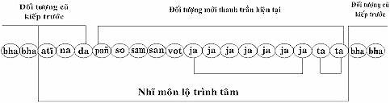 Sau khi nhĩ môn lộ trình tâm chấm dứt, theo định luật tự nhiên liền tiếp theo sau có 4 ý môn lộ trình tâm tiếp tục phát sanh theo tuần tự nhất định như sau: 1- Atītaggahaṇavīthicitta: Ý môn lộ trình tâm biết đối tượng mới thanh trần âm thanh quá khứ từ nhĩ môn lộ trình tâm như sau: Ðồ biểu ý môn lộ trình tâm Atītaggahaṇavīthicitta 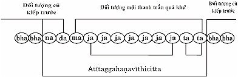 Mỗi nhĩ môn lộ trình tâm biết đối tượng thanh trần, mỗi âm thanh hiện tại nào chấm dứt, liền tiếp theo sau ý môn lộ trình tâm Atītaggahaṇavīthicitta tuần tự phát sanh biết đối tượng mới thanh trần, âm thanh quá khứ ấy. Như vậy, có bao nhiêu âm thanh, thì có bấy nhiêu nhĩ môn lộ trình tâm, thì cũng có bấy nhiêu ý môn lộ trình tâm Atītaggahaṇavīthicitta, biết đối tượng mới thanh trần, âm thanh quá khứ. Sau khi ý môn lộ trình tâm Atītaggahaṇavīthicitta chấm dứt, liền tiếp theo sau ý môn lộ trình tâm Samūhaggahaṇavīthicitta. 2- Samūhaggahaṇavīthicitta: Ý môn lộ trình tâm tổng kết biết đối tượng mới thanh trần, âm thanh quá khứ của ý môn lộ trình tâm Atītaggahaṇavīthicitta như sau: Ðồ biểu ý môn lộ trình tâm Samūhaggahaṇavīthicitta 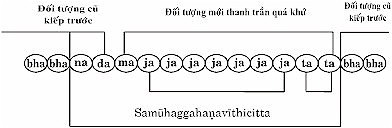 Mỗi ý môn lộ trình tâm Atītaggahaṇavīthicitta biết đối tượng mới thanh trần, âm thanh quá khứ chấm dứt, liền tiếp theo sau, ý môn lộ trình tâm tổng kết Samūhaggahaṇavīthicitta phát sanh làm phận sự tổng kết các âm thanh lại với nhau, ghi nhớ ở trong tâm. Như vậy, có bao nhiêu ý môn lộ trình tâm Atītaggahaṇavīthicitta, thì có bấy nhiêu ý lộ trình tâm Samūhaggahaṇavīthicitta. Hai ý môn lộ trình tâm này biết đối tượng mới thanh trần paramattha quá khứ từ nhĩ môn lộ trình tâm. Sau khi ý môn lộ trình tâm tổng kết Samūhaggahaṇavīthicitta chấm dứt, liền tiếp theo sau ý môn lộ trình tâm Nāmaggahaṇa- vīthicitta. 3- Nāmaggahaṇavīthicitta: Ý môn lộ trình tâm biết đối tượng nāmapaññatti: danh từ ngôn ngữ chế định từ các thanh trần, âm thanh tổng kết ấy như sau: Ðồ biểu ý môn lộ trình tâm Nāmaggahaṇavīthicitta
Ý môn lộ trình tâm tổng kết Samūhaggahaṇavīthicitta các âm thanh ghi nhớ lại với nhau ở trong tâm, liền tiếp theo sau ý môn lộ trình tâm biết đối tượng nāmapaññatti: danh từ ngôn ngữ chế định từ đối tượng tổng kết các âm thanh, ghi nhớ lại với nhau ấy, mà chưa biết ý nghĩa những âm thanh ấy. Sau khi ý môn lộ trình tâm Nāmaggahaṇavīthicitta biết nāmapaññatti chấm dứt, liền tiếp theo sau ý môn lộ trình tâm Atthaggahaṇavīthicitta. 4- Atthaggahaṇavīthicitta: Ý môn lộ trình tâm biết đối tượng atthapaññatti: khái niệm về ý nghĩa như sau: Ðồ biểu ý môn lộ trình tâm Atthaggahaṇavīthicitta
Ý môn lộ trình tâm Nāmaggahaṇavīthicitta biết đối tượng nāmapaññatti: danh từ ngôn ngữ chế định các âm thanh ấy ở trong tâm, liền tiếp theo sau ý môn lộ trình tâm biết đối tượng atthapaññatti: ý nghĩa chế định, có khái niệm về ý nghĩa của các âm thanh ấy. Hai ý môn lộ trình tâm này biết đối tượng paññatti. Tóm lại, - Nhĩ môn lộ trình tâm biết đối tượng mới thanh trần, âm thanh hiện tại, sắc pháp paramattha hiện tại. - Hai ý môn lộ trình tâm Atītaggahaṇavīthicitta - Samūhagga- haṇavīthicitta biết đối tượng mới thanh trần, âm thanh quá khứ, sắc pháp paramattha quá khứ. - Hai ý môn lộ trình tâm Nāmaggahaṇavīthicitta - Atthagga- haṇavīthicitta biết đối tượng paññatti chế định. Sự hiểu biết theo phận sự - Ta không có, nên không có chủ thể nghe. - Tai là nhĩ tịnh sắc thuộc sắc pháp chỉ có thể tiếp nhận đối tượng thanh trần, âm thanh mà thôi, không thể nghe được thanh trần. - Nhĩ thức tâm có phận sự nghe thanh trần, âm thanh, đối tượng sắc pháp paramattha hiện tại. - Nhĩ môn lộ trình tâm biết đối tượng mới thanh trần, âm thanh hiện tại, thuộc sắc pháp paramattha hiện tại. - Hai ý môn lộ trình tâm Atītaggahaṇavīthicitta và Samūhag- gahaṇavīthicitta biết thanh trần quá khứ, sắc pháp paramattha quá khứ. - Ý môn lộ trình tâm Nāmaggahaṇavīthicitta và Atthagga- haṇavīthicitta biết đối tượng paññatti chế định. Ví dụ: Danh từ "Bud-dho". Một đối tượng thanh trần 2 âm thanh "Bud" và "dho" tiếp xúc với nhĩ môn, sự diễn tiến qua các lộ trình tâm nhất định như sau: - Nhĩ môn lộ trình tâm (Sotadvāravīthicitta) biết đối tượng âm thanh "Bud" và "dho" mỗi nhĩ môn lộ trình tâm biết mỗi âm thanh, sắc pháp paramattha hiện tại; tiếp theo: - Ý môn lộ trình tâm Atītaggahaṇavīthicitta biết đối tượng âm thanh "Bud" và "dho" ấy, sắc pháp paramattha quá khứ; tiếp theo: - Ý môn lộ trình tâm Samūhaggahaṇavīthicitta tổng kết đối tượng hai âm thanh "Bud + dho" ấy lại với nhau, cũng sắc pháp paramattha quá khứ; tiếp theo: - Lộ trình tâm Nāmaggahaṇavīthicitta biết đối tượng nāmapaññatti: danh từ ngôn ngữ chế định gọi "Buddho" là danh từ ngôn ngữ Pāḷi, chưa biết ý nghĩa; tiếp theo, - Lộ trình tâm Atthaggahaṇavīthicitta biết đối tượng attha- paññatti: ý nghĩa chế định gọi "Buddho" nghĩa là Ðức Phật, là bậc tự mình chứng ngộ chân lý Tứ thánh đế, chứng đắc 4 Thánh Ðạo, 4 Thánh Quả và Niết Bàn, rồi giáo huấn chúng sinh có duyên lành cùng chứng ngộ chân lý Tứ thánh đế, chứng đắc Thánh Ðạo, Thánh Quả và Niết Bàn như Ngài. Nếu trường hợp nghe danh từ ngôn ngữ chế định "Buddho" mà không biết ý nghĩa, thì lộ trình tâm Atthaggahaṇavīthicitta không phát sanh. 3- 4- 5- Tỷ môn lộ trình tâm, thiệt môn lộ trình tâm, thân môn lộ trình tâm, tương tự như trường hợp nhãn môn lộ trình tâm. - Khi tỷ môn lộ trình tâm biết đối tượng hương trần các loại mùi, sắc pháp paramattha hiện tại. - Khi thiệt môn lộ trình tâm biết đối tượng vị trần các loại vị, sắc pháp paramattha hiện tại. - Khi thân môn lộ trình tâm biết đối tượng xúc trần các loại xúc, sắc pháp paramattha hiện tại. Mỗi lộ trình tâm vừa chấm dứt, theo định luật tự nhiên có 4 ý môn lộ trình tâm tiếp theo phát sanh theo tuần tự nhất định làm phận sự của chúng như sau: 1- Ý môn lộ trình tâm Atītaggahaṇavīthicitta: * Biết đối tượng hương trần thuộc sắc pháp paramattha quá khứ từ tỷ môn lộ trình tâm. * Biết đối tượng vị trần thuộc sắc pháp paramattha quá khứ từ thiệt môn lộ trình tâm. * Biết đối tượng xúc trần thuộc sắc pháp paramattha quá khứ từ thân môn lộ trình tâm. 2- Ý môn lộ trình tâm Samūhaggahaṇavīthicitta: * Tổng kết các phần hương trần từ ý môn lộ trình tâm Atītag- gahaṇavīthicitta. * Tổng kết các phần vị trần từ ý môn lộ trình tâm Atītaggahaṇa- vīthicitta. * Tổng kết các phần xúc trần từ ý môn lộ trình tâm Atītag- gahaṇavīthicitta. Hai ý môn lộ trình tâm Atītaggahaṇavīthicitta và Samūhag- gahaṇavīthicitta này biết đối tượng paramattha quá khứ. 3- Ý môn lộ trình tâm Atthaggahaṇavīthicitta biết đối tượng atthapaññatti: ý nghĩa chế định từ đối tượng tổng kết của ý môn lộ trình tâm Samūhaggahaṇavīthicitta qua khái niệm về ý nghĩa của đối tượng tổng kết ấy ở trong tâm, chưa có danh từ gọi. 4- Ý môn lộ trình tâm Nāmaggahaṇavīthicitta biết đối tượng nāmapaññatti: danh từ ngôn ngữ chế định gọi tên atthapaññatti: ý nghĩa của đối tượng tổng kết ấy. Hai ý môn lộ trình Atthaggahaṇavīthicitta và Nāmagga- haṇavīthicitta biết đối tượng paññatti: chế định. B- Suddhamanodvāravīthicitta: Ý môn lộ trình tâm đơn thuần cõi dục giới, không tuỳ thuộc vào ngũ môn lộ trình tâm Ý môn lộ trình tâm đơn thuần này có khả năng nhận biết được 6 đối tượng: sắc trần, thanh trần, hương trần, vị trần, xúc trần và pháp trần thuộc về paramattha ở 3 thời (tekālika): quá khứ, hiện tại, vị lai; và đối tượng Nibbāna, đối tượng paññatti chế định thuộc về đối tượng pháp trần ngoại 3 thời (kālavimutta); mỗi ý môn lộ trình tâm đơn thuần nhận biết 1 trong 6 đối tượng ấy. Ý môn lộ trình tâm đơn thuần đặc biệt hơn ý môn lộ trình tâm theo sau ngũ môn lộ trình tâm, do bởi nhiều nguyên nhân như: đã từng thấy, từng nghe, từng tiếp xúc, từng biết 6 đối tượng, hoặc đã từng có 6 đối tượng trong tâm... đối tượng ấy hiện rõ ở ý môn lộ trình tâm đơn thuần. Cho nên, ý môn lộ trình tâm đơn thuần không tuỳ thuộc vào ngũ môn lộ trình tâm ở hiện tại. Ý môn lộ trình tâm đơn thuần có nhiều loại, trong phần này chỉ đề cập đến Kāmajavanamanodvāravīthicitta: Ý môn lộ trình tâm có dục giới tác hành tâm. Trường hợp 1 trong 6 đối tượng thật rõ ràng nhất hiện rõ ý môn lộ trình tâm đơn thuần, có 12 sát na tâm sanh diệt tuần tự như sau: Ðồ biểu ý môn lộ trình tâm đơn thuần đối tượng paramattha
Ý môn lộ trình tâm đơn thuần này, có thể biết 1 trong 6 đối tượng: sắc trần, thanh trần, hương trần, vị trần, xúc trần, pháp trần (trừ đối tượng paññatti và đối tượng Niết Bàn) thật rõ ràng hiện ra trong tâm; hoặc 1 trong 6 đối tượng đang hiện hữu thực tánh của các pháp (trường hợp đang tiến hành thiền tuệ); hoặc đối tượng đã từng thấy, từng nghe, từng biết... trước đây. Khi đối tượng thuộc về paramattha đã là 1 trong 6 đối tượng thật rõ ràng nhất hiện rõ trong ý thức tâm qua ý môn lộ trình tâm diễn tiến theo tuần tự như sau: 1- Bhavaṅgacalana: Hộ kiếp tâm rung động. Khi 1 trong 6 đối tượng mới nào hiện rõ ràng ở trong tâm. làm cho hộ kiếp tâm rung động, nhưng vẫn còn giữ đối tượng cũ kiếp trước. 2- Bhavaṅgupaccheda: Hộ kiếp tâm bị cắt đứt. Ðối tượng mới ấy có năng lực làm cho hộ kiếp tâm bị cắt đứt, đồng thời cắt đứt luôn đối tượng cũ kiếp trước, để cho ý môn hướng tâm tiếp nhận đối tượng mới ấy. 3- Manodvāravajjanacitta: Ý môn hướng tâm. Tâm này tiếp nhận đối tượng mới ấy, xác định đối tượng của thiện tâm, hoặc bất thiện tâm, hoặc duy tác tâm tùy theo căn duyên rồi diệt, làm duyên cho tác hành tâm phát sanh. 4- 10- Javanacitta: Tác hành tâm. Tác hành tâm đó là thiện tâm, hoặc bất thiện tâm, hoặc duy tác tâm phát sanh liên tục 7 sát na tâm đồng loại, làm phận sự tạo nên thiện nghiệp, hoặc bất thiện nghiệp hoặc duy tác, tùy theo trình độ hiểu biết của chúng sinh. Riêng đối với bậc Thánh Arahán có duy tác tâm phát sanh chỉ có tạo tác mà thôi, không thành thiện nghiệp, bất thiện nghiệp nào cả. 11- 12- Tadālambana: Tiếp đối tượng tâm. Tiếp đối tượng tâm là quả tâm phát sanh liên tục 2 sát na tâm đồng loại, làm phận sự tiếp nhận đối tượng từ tác hành tâm còn dư lại 2 sát na tâm, đồng thời chấm dứt ý môn lộ trình tâm đơn thuần bằng hộ kiếp tâm. Mỗi ý môn lộ trình tâm đơn thuần chỉ có thể biết 1 trong 6 đối tượng mới nào, trong thời gian nào, có thể diễn tiến liên tục nhiều lần để nhận biết đối tượng ấy rồi thay đổi sang đối tượng mới khác, qua ý môn lộ trình tâm đơn thuần khác, tùy theo nhân duyên. Khi có đối tượng thuộc về paññatti nào, ý môn lộ trình tâm đơn thuần tuần tự phát sanh biết đối tượng paññatti ấy, nhưng không có 2 sát na tâm tadālambana như sau: Ðồ biểu ý môn lộ trình tâm đơn thuần đối tượng paññatti 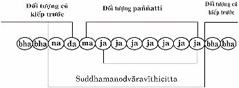 Ý môn lộ trình tâm đơn thuần này có khả năng không những biết đối tượng paramattha, mà còn biết đối tượng paññatti nữa. Thực tế trong đời sống hằng ngày, đối với hàng phàm nhân thường chỉ biết mọi đối tượng thuộc về paññatti; còn đối tượng paramattha tuy có hiện hữu thật, nhưng vì vô minh che án thực tánh pháp của đối tượng paramattha ấy, nên không dễ biết được. Ðối với hành giả đang tiến hành thiền tuệ thì có thể thấy rõ, biết rõ được đối tượng thuộc về paramattha, một khi hành đúng theo pháp hành thiền tuệ. Ðối với bậc Thánh nhân, chắc chắn đã từng thấy rõ, biết rõ đối tượng thuộc về paramattha, khi đã tiến hành thiền tuệ, đã chứng ngộ chân lý Tứ thánh đế, chứng đắc Thánh Ðạo, Thánh Quả. Vì vậy, mặc dầu bậc Thánh nhân trong cuộc sống hằng ngày có khi biết đối tượng paññatti, nhưng không bao giờ có tà kiến chấp thủ nơi đối tượng cho là ta, người, chúng sinh, vật này, vật kia... vì bậc Thánh nhân đã diệt đoạn tuyệt được 4 tham tâm hợp theo tà kiến bằng Nhập Lưu Thánh Ðạo Tuệ. Tóm lại, sự khác biệt nhau giữa đối tượng paramattha và đối tượng paññatti phân biệt như sau: * Khi nào tâm còn biết đối tượng paññatti, thì khi ấy tâm không biết đối tượng paramattha. Và ngược lại, khi nào trí tuệ thiền tuệ thấy rõ, biết rõ đối tượng paramattha, thì khi ấy, trí tuệ thiền tuệ không biết đối tượng paññatti. * Khi nào tâm còn có khái niệm về atthapaññatti, ý nghĩa, hình dạng; về ta, người, chúng sinh..., và còn biết saddapaññatti, danh từ ngôn ngữ chế định gọi tên đối tượng atthapaññatti ấy, thì khi ấy tâm hoàn toàn không biết đối tượng paramattha. * Khi nào trí tuệ thiền tuệ thấy rõ, biết rõ thực tánh của danh pháp, sắc pháp là pháp paramattha (không phải ta, người, chúng sinh...), thì khi ấy trí tuệ thiền tuệ không biết về đối tượng paññatti nào. - "Biết paññatti, thì paramattha không hiện rõ. - Trí tuệ biết rõ paramattha, thì không có paññatti". Paññattidhamma và Paramatthadhamma * Paññattidhamma: Chế định pháp, có 2 loại, ý nghĩa chế định và danh từ ngôn ngữ chế định. Về danh từ ngôn ngữ chế định có 2 loại:
Cả 2 loại chế định này đều xem là sự thật của đời, theo ngôn ngữ chế định (sammutisacca), để thông tin hiểu biết lẫn nhau. * Paramatthadhamma: Chân nghĩa pháp, là pháp có thực tánh không biến thể, có 4 loại: tâm, tâm sở, sắc pháp và Niết Bàn, là sự thật hiển nhiên; nhưng bị màn vô minh che phủ, nên không có một ai trong toàn cõi thế giới chúng sinh thấy rõ, biết rõ được Chân nghĩa pháp ấy, cho đến khi Ðức Phật xuất hiện trên thế gian, Ngài là Bậc Toàn Giác (Sabbaññū) biết đầy đủ ñeyyadhamma: pháp nên biết, có 5 chi: 1- Saṅkhāra: Các pháp hành hữu vi. Do đó, Ðức Phật có thể chế định danh từ ngôn ngữ không có thực tánh và danh từ ngôn ngữ có thực tánh pháp làm nền tảng, để giáo huấn tế độ chúng sinh có duyên lành, được chứng ngộ chân lý Tứ thánh đế, chứng đắc 4 Thánh Ðạo, 4 Thánh Quả và Niết Bàn, như Ngài. Ðó là đức tánh siêu việt của Bậc Toàn Giác. Thật vậy, Ðức Phật Ðộc Giác cũng tự mình chứng ngộ chân lý Tứ thánh đế, chứng đắc 4 Thánh Ðạo, 4 Thánh Quả và Niết Bàn, nhưng sở dĩ Ngài không thể chế định được danh từ ngôn ngữ để giáo huấn tế độ chúng sinh cùng chứng ngộ như Ngài, là vì Ngài không có đầy đủ ñeyyadhamma như Ðức Phật Toàn Giác. Những bậc Thánh Thanh Văn đệ tử của Ðức Phật, nhờ được nghe chánh pháp của Ðức Phật, tiến hành thiền tuệ, mới dẫn đến sự chứng ngộ chân lý Tứ thánh đế, chứng đắc Thánh Ðạo, Thánh Quả và Niết Bàn; lại còn có thể giảng dạy cho người khác cùng chứng ngộ như các Ngài. Kinh Bāhiyasutta Trong kinh Bāhiyasutta [27] , Ðức Phật thuyết dạy 6 đối tượng với 6 tâm thức được tóm tắt bằng 4 phần (koṭṭhāsa), thuộc về paramatthadhamma: Chân nghĩa pháp, để tế độ Ngài Bāhiya, khi Ðức Phật trên đường đi vào thành Sāvatthi để khất thực, có đoạn dạy: "Tassmātiha te Bāhiya, evaṃ sikkhitabbaṃ: Evañhi te Bāhiya sikkhitabbaṃ. Yato kho te Bāhiya diṭṭhe diṭṭhamattaṃ bhavissati, sute sutamattaṃ bhavissati, mute mutamattaṃ bhavissati, viññāte viññātamattaṃ bhavissati, tato tvaṃ Bāhiya na tena. Yato tvaṃ Bāhiya na tena, tato tvaṃ Bāhiya na tattha. Yato tvaṃ Bāhiya na tattha, tato tvaṃ Bāhiya nevidha na huraṃ, na ubhayamantarena. Esevanto dukkhassā’ti. Atha kho Bāhiyassa dārucīriyassa Bhagavato imāya saṅkhittāya dhammadesanāya tāvadeva anupādāya āsavehi cittaṃ mucci". Ðức Thế Tôn dạy Ngài Bāhiya rằng: - Này Bāhiya, nếu như vậy, con nên học tập, hành theo tam học (giới- định- tuệ), như vầy: * Khi nhãn thức tâm nhìn thấy sắc trần, thì chỉ là sắc trần, thuộc về sắc pháp! * Khi nhĩ thức tâm nghe thanh trần, thì chỉ là thanh trần, thuộc về sắc pháp! * Khi tỷ thức tâm, thiệt thức tâm, thân thức tâm, tiếp xúc với: hương trần thì chỉ là hương trần, vị trần thì chỉ là vị trần, xúc trần thì chỉ là xúc trần, thuộc về sắc pháp! * Khi ý thức tâm biết pháp trần, thì chỉ là pháp trần, thuộc về danh pháp, sắc pháp! Này Bāhiya, con nên học tập, hành theo tam học như vậy đó. - Này Bāhiya, khi nào, đối với con: * Khi nhãn thức tâm nhìn thấy sắc trần, thì chỉ là sắc trần, thuộc về sắc pháp! * Khi nhĩ thức tâm nghe thanh trần, thì chỉ là thanh trần, thuộc về sắc pháp! * Khi tỷ thức tâm, thiệt thức tâm, thân thức tâm, tiếp xúc với: hương trần thì chỉ là hương trần, vị trần thì chỉ là vị trần, xúc trần thì chỉ là xúc trần, thuộc về sắc pháp! * Khi ý thức tâm biết pháp trần, thì chỉ là pháp trần, thuộc về danh pháp, sắc pháp! Này Bāhiya, khi ấy, con sẽ không có phiền não tham, sân, si. - Này Bāhiya, khi nào, con không có phiền não tham, sân, si. Này Bāhiya, khi ấy, con sẽ không có phiền não tham, sân, si nương nhờ ở trong sắc, thanh, hương, vị, xúc, pháp. Này Bāhiya, khi nào, con không có phiền não tham, sân, si nương nhờ ở trong sắc, thanh, hương, vị, xúc, pháp. Này Bāhiya, khi ấy, con sẽ không còn chấp thủ ở kiếp hiện tại này, sẽ không còn chấp thủ ở kiếp vị lai, sẽ không còn chấp thủ cả kiếp hiện tại này lẫn kiếp vị lai nữa. Nếu được như vậy, con sẽ chứng đạt đến tận cùng của sự khổ. (Chấm dứt sự khổ tử sanh luân hồi trong tam giới). Ðại Ðức Bāhiya Dārucīriya, lắng nghe, hành theo bài pháp tóm tắt của Ðức Thế Tôn. Ngay khi ấy, tâm của Ngài hoàn toàn giải thoát mọi phiền não ngấm ngầm, không còn chấp thủ ngũ uẩn nữa". (Sau khi nghe bài pháp tóm tắt của Ðức Phật xong, Ngài Ðại Ðức Bāhiya Dārucīriya liền chứng đắc thành bậc Thánh Arahán). Ðức Phật dạy: "Diṭṭhe diṭṭhamattaṃ bhavissati...". "Khi nhãn thức tâm nhìn thấy sắc trần, thì chỉ là sắc trần, thuộc về sắc pháp". Thông thường, hạng phàm nhân, không phải là hành giả tiến hành thiền tuệ, khi nhãn thức tâm nhìn thấy sắc trần, do vô minh che phủ, không thấy rõ, biết rõ thực tánh của danh pháp, sắc pháp thuộc pháp paramattha, nên chỉ còn biết qua paññatti: ý nghĩa, hình dạng... chế định và danh từ ngôn ngữ chế định gắn dính lên danh pháp, sắc pháp ấy, có thể làm nhân duyên nương nhờ phát sanh tà kiến thấy sai chấp lầm "ta thấy, người này, vật kia..." lại phát sanh mọi phiền não. Bốn pháp: "diṭṭha, suta, mutta, viññāta" là những pháp tóm tắt của 12 xứ (āyatana): 6 xứ bên trong tương ứng với 6 xứ bên ngoài làm nhân cho tâm phát sanh và cũng làm nơi nương nhờ cho lộ trình tâm phát sanh. - 6 xứ bên trong là: nhãn xứ, nhĩ xứ, tỷ xứ, thiệt xứ, thân xứ, ý thức xứ. - 6 xứ bên ngoài là: sắc xứ, thanh xứ, hương xứ, vị xứ, xúc xứ, pháp xứ. Xứ bên trong tương ứng xứ bên ngoài như: - Nhãn xứ với sắc xứ là nhân, làm cho nhãn thức tâm phát sanh nhìn thấy sắc trần là quả. - Nhĩ xứ với thanh xứ là nhân, làm cho nhĩ thức tâm phát sanh nghe thấy thanh trần là quả. - Tỷ xứ với hương xứ là nhân, làm cho tỷ thức tâm phát sanh ngửi hương trần là quả. - Thiệt xứ với vị xứ là nhân, làm cho thiệt thức tâm phát sanh nếm vị trần là quả. - Thân xứ với xúc xứ là nhân, làm cho thân thức tâm phát sanh tiếp xúc trần là quả. - Ý thức xứ với pháp trần là nhân, làm cho ý thức tâm phát sanh biết pháp trần là quả. Ðức Phật thuyết tóm tắt 12 xứ ấy thành 4 pháp: * Diṭṭha: đó là sắc trần được thấy. * Suta: đó là thanh trần được nghe. * Mutta: đó là hương trần, vị trần, xúc trần được ngửi, nếm, tiếp xúc. * Viññāta: đó là nhãn, nhĩ, tỷ, thiệt, thân, ý thức tâm, biết được pháp trần. - Khi sắc trần được thấy chỉ là sắc pháp mà thôi; không phải ta, người, đàn ông, đàn bà, chúng sinh, vật nầy, vật kia... - Khi thanh trần được nghe chỉ là sắc pháp mà thôi; không phải ta, người, đàn ông, đàn bà, chúng sinh, vật nầy, vật kia... - Khi hương trần, vị trần, xúc trần được ngửi, nếm, tiếp xúc, chỉ là sắc pháp mà thôi; không phải ta, người, đàn ông, đàn bà, chúng sinh, vật nầy, vật kia... - Khi nhãn, nhĩ, tỷ, thiệt, thân, ý thức tâm, biết được pháp trần chỉ là sắc pháp, danh pháp mà thôi; không phải ta, người, đàn ông, đàn bà, chúng sinh, vật nầy, vật kia... Tất cả đều thuộc sắc pháp danh pháp thuộc pháp paramattha mà thôi, không phải paññatti: chế định pháp. Chú thích: [24] Pháp trần gồm có 89 hay 121 tâm, 52 tâm sở, 21 sắc pháp (trừ 7 sắc pháp ở ngũ trần), Niết Bàn và đối tượng paññatti. [25] Kālavimutti: ngoại 3 thời, không thuộc thời quá khứ, hiện tại, vị lai. [26] Saṃyuttanikāya, bộ Khandhasamyutta, kinh Pheṇapindūpamāsutta-vaṇṇanā. [27] Khuddakanikāya, phần Udāna, kinh Bāhiyasutta. -ooOoo- Ðầu trang
| Mục lục
| 1.1
| 1.2
| 1.3
| 1.4
| 1.5
| 2.1
| 2.2
| 2.3
| 2.4
| 2.5
| 3.1
| 3.2
| 3.3
| 3.4
| 3.5
| |